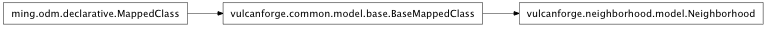

Neighborhood¶

Neighborhood objects are used to group and organize Project objects.
This organization direclty affects the URL of a given project. For instance: A project shortnamed my-project in the neighborhood with the prefix my-neighborhood will have the URL http://my-platform.something/my-neighborhood/my-project.
- class vulcanforge.neighborhood.model.Neighborhood[source]¶
Provide a grouping of related projects.
url_prefix - location of neighborhood (may include scheme and/or host) css - block of CSS text to add to all neighborhood pages